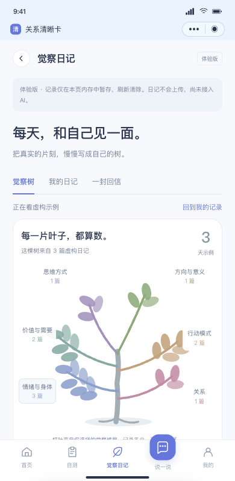

先把页面看清楚，
再把产品做出来。
所有原型集中在这里。沿着真实入口体验，也可以直接跳到想审核的页面。
本次新增 · 2026.11.02每天，和自己见一面。
每天，和自己见一面。
觉察日记 · 可点击原型评审
在原有自测与成长原型里，补上觉察树、每日记录与一封回信。
共 27 个可点击页面，原有自测、报告和关系整理入口继续保留。

按功能审核页面
一级菜单 → 二级页面 · 共 27 屏首页1 页
二级页面
自测9 页
说一说1 页
二级页面
先找共鸣，再开始探索
MBTI 16 型优缺点 · 不用先答题VIA 优势探索 · 本次新增
内容来自提供的 HTML，配色沿用现有 UIMBTI 性格测试 · 本次调整
在觉察日记版本上继续扩展觉察日记 · 本次审核画面
点击图片进入对应交互页历史原型与对照资料
不属于当前自测主流程在项目里，本地启动查看
在 aichat 目录运行。浏览器打开 http://127.0.0.1:4188/，后续修改页面后刷新即可。
如果 4188 已经启动，直接使用现有页面。
npm run ui